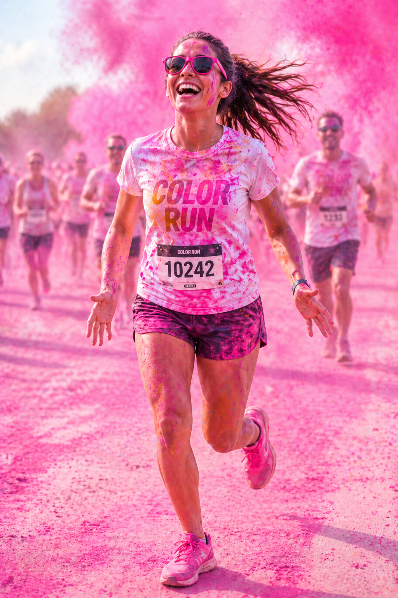
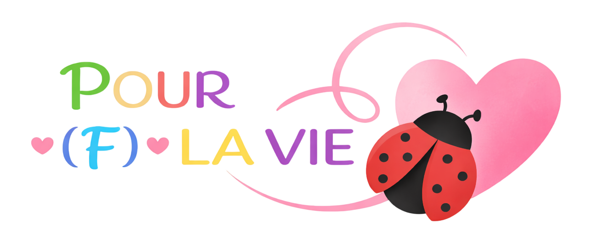

PLUS QU'UNE COURSE, UNE EXPLOSION DE COULEURS !
Rejoins la Color Run organisée par l'association POUR (F) LA VIE : 6 km de bonheur, de musique et de poudre colorée pour une cause qui nous tient à cœur !

2026 LE TRÉVOUX
LA COLOR RUN, C'EST QUOI ?
Un concept unique où le sport rime avec plaisir et solidarité ! Marche, cours, danse, amuse-toi... et laisse-toi emporter par des nuages de couleurs à chaque kilomètre, dans les rues de Trévoux.
Ici, pas de chrono, ni de classement : seul compte le sourire à l'arrivée et le soutien à notre association !
EN SAVOIR PLUS
PRÊT À VIVRE UNE EXPÉRIENCE INOUBLIABLE ?
Rendez-vous le 27 septembre 2026 au Trévoux !

❤️ Les bénéfices de la Color Run soutiennent la lutte contre les maladies du sang
POUR (F) LA VIE
Ensemble contre les maladies du sang
L'association POUR (F) LA VIE lutte contre les maladies graves du sang — leucémies, lymphomes, aplasies — en sensibilisant le grand public et en soutenant les patients et leurs proches à chaque étape de leur parcours.
Pour vaincre ces maladies, des donneurs de moelle osseuse sont indispensables. Jeunes, en bonne santé, ils peuvent sauver des vies simplement en s'inscrivant sur le registre national. La Color Run est l'occasion idéale de faire connaître cette démarche et d'encourager chacun à devenir un potentiel sauveur.
Courir, c'est bien. Donner, c'est vital.
DÉCOUVRIR L'ASSOCIATION